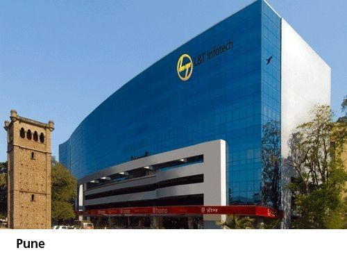
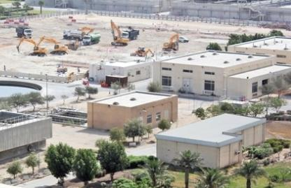
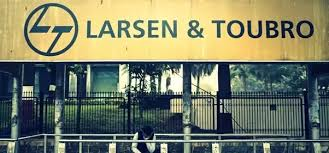
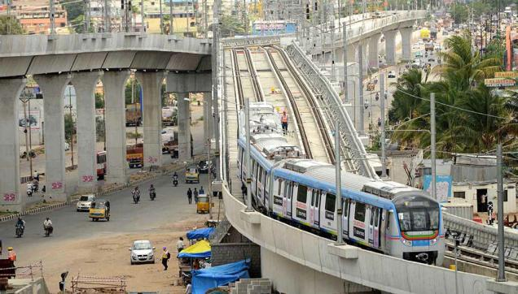
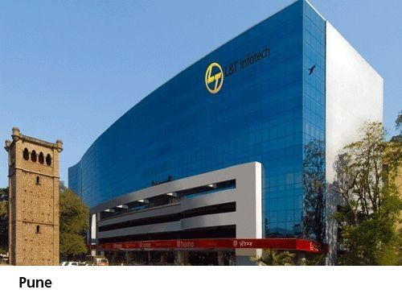
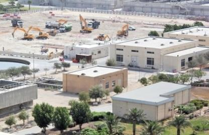
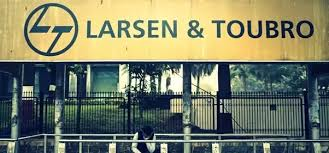
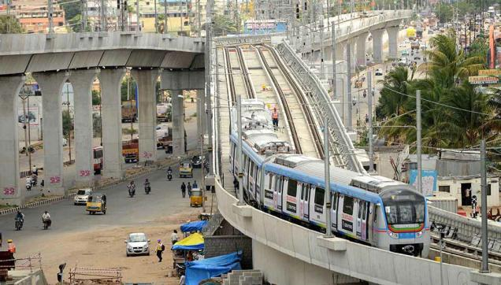


 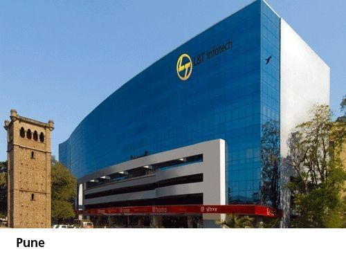
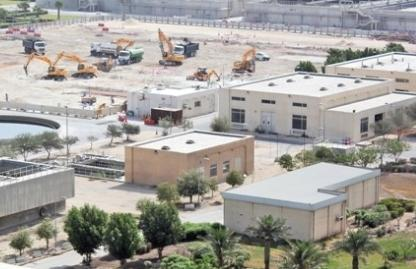
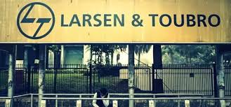
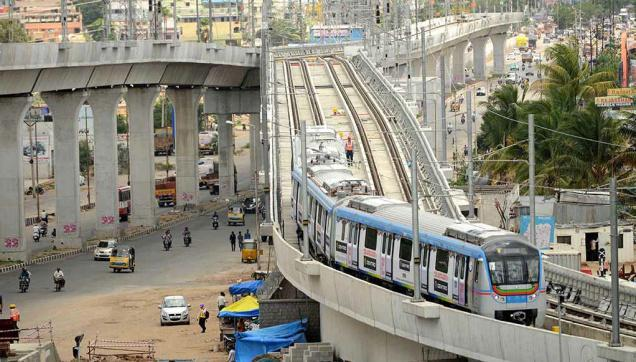
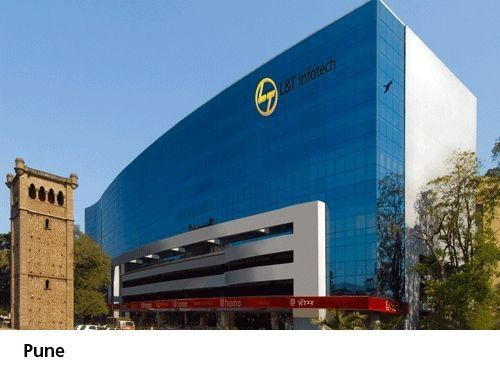
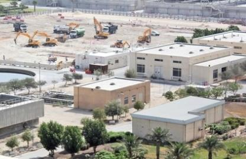
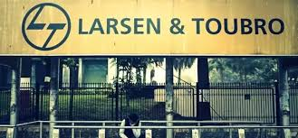
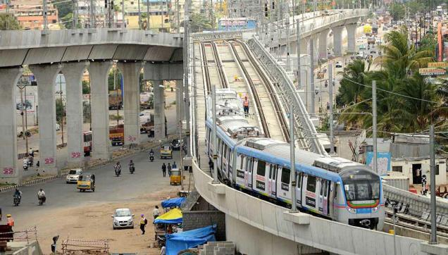
Technology strength constitutes a strategic mix of in-house Research and Development and the expertise of its joint venture partners. With a continuous focus on innovation, design and development, the future is taking shape in L and T's Technology and Innovation centres around the world
L and T Engineering Centres at Mumbai, Vadodara and Delhi carry out process design and simulation, analysis of computational fluid dynamics, mechanical design, failure analysis and trouble shooting. L and T Hydrocarbon Engineering’s R and D Centre located in Mumbai, symbolises our state-of-the art capabilities in the areas of advanced engineering, analysis and technology.
The advanced engineering capabilities of R and D are utilised over the entire lifecycle of a project, thus enabling the businesses to choose the right technology and product, optimize process / equipment design, solve product or process-related problems and achieve guaranteed performance of the plants. The Upstream Technology Centre identifies and develops technology for the upstream Oil and Gas sector.
.jpg) Technology strength constitutes a strategic mix of in-house Research and Development and the expertise of its joint venture partners. With a continuous focus on innovation, design and development, the future is taking shape in L and T's Technology and Innovation centres around the world. L and T Engineering Centres at Mumbai, Vadodara and Delhi carry out process design and simulation, analysis of computational fluid dynamics, mechanical design, failure analysis and trouble shooting. L and T Hydrocarbon Engineering’s R and D Centre located in Mumbai, symbolises our state-of-the art capabilities in the areas of advanced engineering, analysis and technology. It offers high-end technology support to the entire spectrum of our Hydrocarbon EPC business, covering the oil and gas sector the entire Hydrocarbon value chain from Upstream to Mid and Downstream.
The R and D Centre carries out applied research in the areas of Chemical Engineering, Thermal Engineering, Water Technology, Material Science and Corrosion Engineering, Machinery and System Engineering and Mechanical Engineering.
The advanced engineering capabilities of R and D are utilised over the entire lifecycle of a project, thus enabling the businesses to choose the right technology and product, optimize process / equipment design, solve product or process-related problems and achieve guaranteed performance of the plants. The Upstream Technology Centre identifies and develops technology for the upstream Oil and Gas sector. It is engaged in a continuing quest to engineer value and provides support in critical areas for all offshore structures - from fixed offshore platforms and modules to drilling rigs, floaters and subsea systems. Spread across an area of more than 100,000 sq. ft. Unnati is the Automation Campus of the E and A business of L and T. It houses a fully equipped Systems Assembly area, separate Factory Acceptance Test (FAT- Systems Integration) area, a Technology Center for new technology research and design, Customer Service Centre for repair services, a Quality Assurance department, a number of conference rooms equipped with modern conferencing systems, and more.
Technology strength constitutes a strategic mix of in-house Research and Development and the expertise of its joint venture partners. With a continuous focus on innovation, design and development, the future is taking shape in L and T's Technology and Innovation centres around the world. L and T Engineering Centres at Mumbai, Vadodara and Delhi carry out process design and simulation, analysis of computational fluid dynamics, mechanical design, failure analysis and trouble shooting. L and T Hydrocarbon Engineering’s R and D Centre located in Mumbai, symbolises our state-of-the art capabilities in the areas of advanced engineering, analysis and technology. It offers high-end technology support to the entire spectrum of our Hydrocarbon EPC business, covering the oil and gas sector the entire Hydrocarbon value chain from Upstream to Mid and Downstream.
The R and D Centre carries out applied research in the areas of Chemical Engineering, Thermal Engineering, Water Technology, Material Science and Corrosion Engineering, Machinery and System Engineering and Mechanical Engineering.
The advanced engineering capabilities of R and D are utilised over the entire lifecycle of a project, thus enabling the businesses to choose the right technology and product, optimize process / equipment design, solve product or process-related problems and achieve guaranteed performance of the plants. The Upstream Technology Centre identifies and develops technology for the upstream Oil and Gas sector. It is engaged in a continuing quest to engineer value and provides support in critical areas for all offshore structures - from fixed offshore platforms and modules to drilling rigs, floaters and subsea systems. Spread across an area of more than 100,000 sq. ft. Unnati is the Automation Campus of the E and A business of L and T. It houses a fully equipped Systems Assembly area, separate Factory Acceptance Test (FAT- Systems Integration) area, a Technology Center for new technology research and design, Customer Service Centre for repair services, a Quality Assurance department, a number of conference rooms equipped with modern conferencing systems, and more.